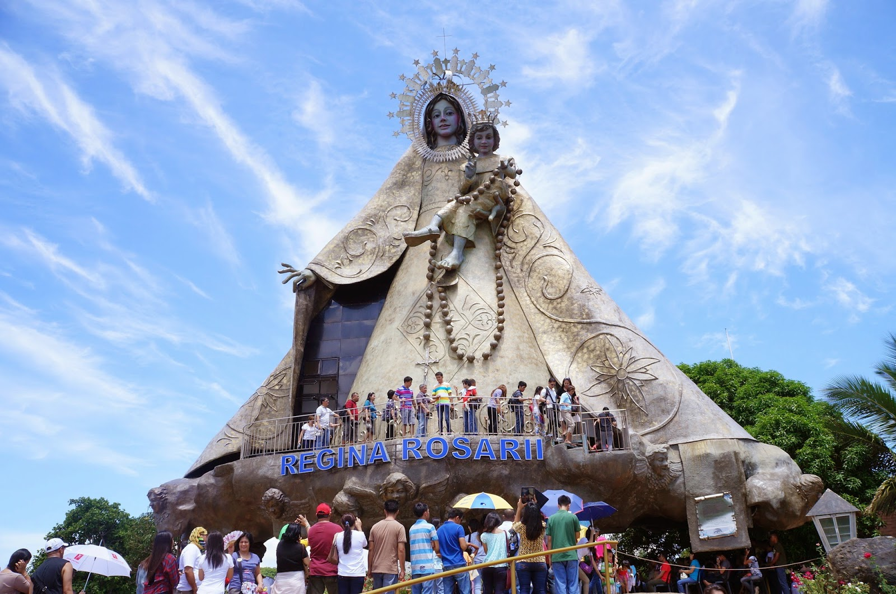
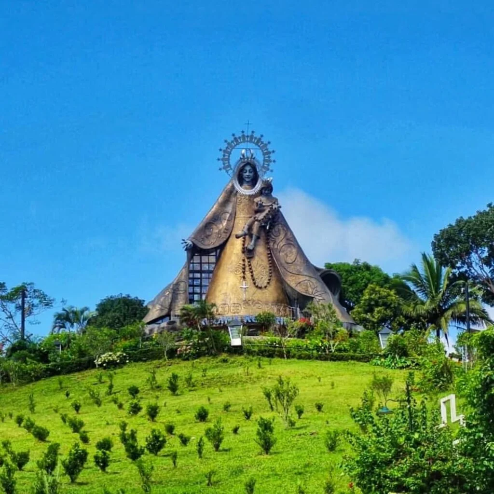
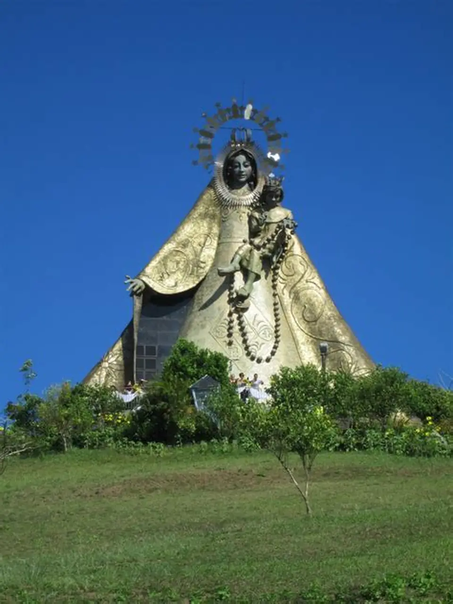
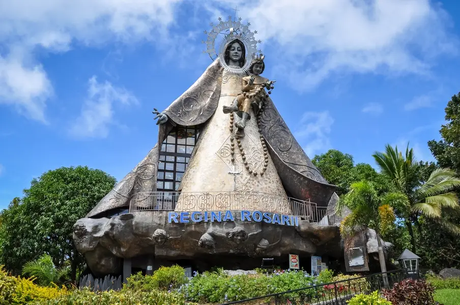

Location:
Marilaque Hwy, Tanay, Rizal.
Best for: Spiritual Seekers, Families, and Meditators.
Vibe: Peaceful, Sacred, and Healing.


Regina RICA
Find Peace and Healing at the Foot of the 71-Foot Queen of the Holy Rosary.
Regina RICA is a 14-hectare pilgrimage site designed for contemplation and spiritual healing. Set against the rolling hills of Tanay, it is dominated by a towering statue of the Virgin Mary that houses a chapel within its base.
Marilaque Hwy, Tanay, Rizal.


